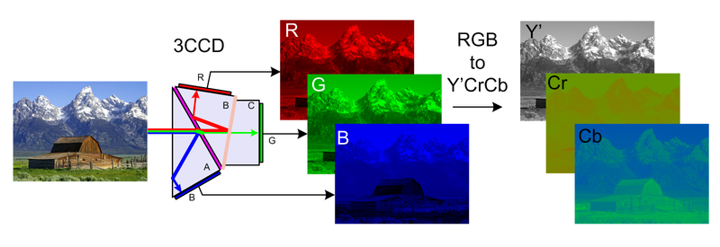
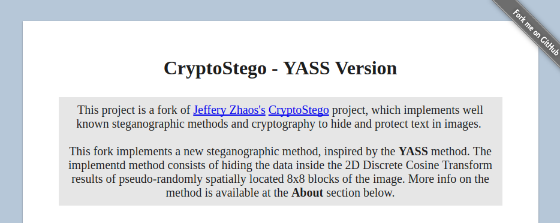

CryptoStego YASS is a fork of the popular CryptoStego steganographic JavaScript library by Jeffery Zhao. This project extends the original scope by implementing a new steganographic method alongside the usual 2D DCT data hiding inside JPEG images, greatly inspired by the YASS method, proposed here:
Solanki, K & Sarkar, Anindya & Manjunath, B. (2007). YASS: Yet Another Steganographic Scheme That Resists Blind Steganalysis. Lect Notes Comput Sci. 2939. 16-31. 10.1007/978-3-540-77370-2_2.
JS library for steganography with encryption - Hide text in an image with encryption and obfuscation. Support least significant bit mode and DCT mode.
- Obfuscation - Random initialization of invalid bits
- Non-linear bit-by-bit message storage
- Valid bits and their order decided by SHA512-based hash function
- Password decides the parameter in hash function. Different passwords map message to different locations in the image
- No signal for password error. Wrong password results in wrong message
- LSB (Least Significant Bit) mode
- Use least significant bits of RGB channels of each pixel to store message
- Resulting image is visually identical to original one
- Can only be stored in non-compressed format such as PNG
- DCT (Discrete cosine transform) mode ~ our focus
- Store information by slightly changing lowest frequency component of each block in frequency domain
- Robust to image compression but stores less data compared to LSB mode
- Resulting image looks different from original one
The Discrete Cosine Transform is usually used for video and image compression. 2D NxN blocks are quantized and entropy encoded, and the lowest frequencies can be entirely removed.
For our use case, we can overwrite the lowest frequencies with data and then recover the data with the inverse transform. This is a usual application of the DCT for steganographic purposes, and is particularly useful for its robustness against compression.
But how it is actually done? And how are we doing it?
Usual implementations, such as the one used by CryptoStego, apply the transform at the 8x8 pixel blocks used by the JPEG grid. Note that we are not worrying about entropy encoding, we are just hiding the data at the lowest frequencies of the DCT transform results for each block. Let us now take a better look into this process.


Converting from RGB to YCbCr allows us to write data in the Y (luma) component through a simple coordinate transformation with the objective of causing less perceptible distortion. *images
Each of the 8x8 blocks of the JPEG grid is then transformed and quantized using the DCT. At this state, we can remove the lowest frequent components, or overwrite them with data (which usually causes more distortion). For CryptoStego, we are just writing a bit at the end of each component, deciding our embedding capacity by a parameter "lim" (which is basically how much difference between a bit '0' and a bit '1' should be reflected on the image).
Before embedding, however, we are also using a password to obfuscate the message. The password is used at a SHA512 hash function multiple times to reorder the message binary data. The message is also replicated a "copy" (one of the available parameters) number of times.
Original JPEG image (above) and stego image (below). Parameters: "copy":5, "lim":30, "message":"hey there", "password":"123". Typical DCT noise of high JPEG compression rates can be clearly seen. We could decrease the distortion by decreasing the compression robustness level, changing the parameters.
The method proposed in the cited paper consists basically of hiding the data in 8x8 pseudo-randomly located blocks, each inside larger BxB blocks. This simple difference is proven to yield better results in resisting blind steganalysis as of 2007.
Keeping a very simillar approach to the original CryptoStego, the new version add a B block size parameter and uses the original password to deterministically seed a pseudo random number generator to choose the smaller block locations inside each B block component of the image, effectively using the same logic to embed and read the message from the stego image.
Instead of following the JPEG encoder ZigZag pattern, it also (same as the CryptoStego DCT method) serially embed the data into the DCT results and then writes it to the image. Another point of notice is that the method does not implement any other compression techniques, such as entropy encoding, which may cause a increase in the image file.
Before getting into the results, here is a link for you to test it for yourself in the static web demo. Also, a link to the repository, if that is your thing.
See here the result for the same parameters as before, and B size 11. We can notice the distorted 8x8 blocks. The distortion seen here is in the same level as the one seen by the standard DCT steganography, but is more noticeable as it can't be confused by the usual compression caused distortions in JPEG images. By varying the robustness level, we can get quite distinct results.
High robustness (above ~ lim:50) versus high secrecy (below ~ lim:10) examples for B size 11.
Keeping the same robustness level, we can also get quite distinct results by changing the parameter B. With B at 8 (above), the minimum possible value, we get the exact same result as with the standard DCT method. With larger B values, we get more secrecy, at a decreased capacity cost (below, with B at 16).
By increasing the complexity and randomness of the original DCT steganographic method, intuitively, this porposition makes it more secure and of harder detection. The original paper where the YASS method is proposed shows that this simple change greatly improves its chance of not being detected by steganalysis of the time.
Steganalysis, however, has come a long way since 2007, and this project does not claim to have faithfully reproduced the original proposition, and, is instead, greatly inspired by it. Further work should be put into it to validate its effectiveness both in robustness to compression and steganalysis resistance.
Here are some links for you:
- pboueke @ github
- my introductory presentation on steganography and more
- web app/demo where you can use the method to hide your secrets
- my landing page
- repository with the code and the original project, by zeruniverse